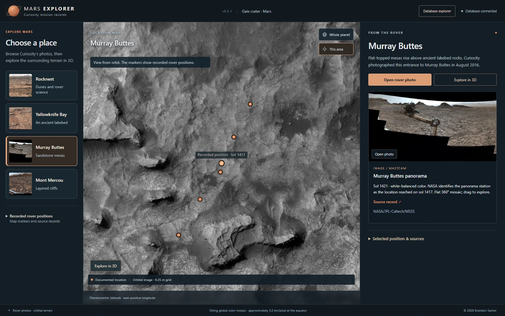

Mars Explorer
Connecting Curiosity’s recorded positions, real imagery, reconstructed terrain, and scientific records without losing their source context.
Read the case study ↓



The problem
Mars mission records are distributed across technical archives and separate viewers. Connecting a mapped rover position with imagery, terrain, instruments, and observations requires preserving their different spatial and temporal meanings.
My role
I lead Spatially Significant and am the author and maintainer of the original Mars Explorer application, interface, and project-specific integration. Application development includes AI-assisted implementation and review within the team’s broader research.
Data & method
The application connects a PostgreSQL/PostGIS database and Python/FastAPI service to a Cesium interface. It uses versioned Curiosity source snapshots, NASA/PDS rover localizations, orbital imagery and elevation, rover mosaics, and APXS records. Source identity and processing history remain traceable.
Implemented result
The local prototype connects four photo destinations—Rocknest, Yellowknife Bay, Murray Buttes, and Mont Mercou—with recorded positions, real rover photographs, and bounded terrain reconstructed from orbital data. A read-only database explorer exposes records, structure, and relationships for inspection.
Scope & limits
Rover mosaics open as flat images. Reconstructed terrain and illustrative lighting do not reproduce a calibrated rover camera or measured historical conditions. Four visitor destinations do not mean four completed scientific datasets.
An evolving local prototype. The gallery shows the October 2026 application interface.
Exploring a destination
A visitor starts with a destination, compares recorded rover positions on the orbital map, and opens the accompanying rover photographs. Where a verified terrain package is available, the surrounding reconstructed surface can be inspected before returning to the location view. Scientific archives and source records remain available alongside the visual workflow.
Keeping scientific identities distinct
The database separates rover localizations, scientific observations, archival products, and the exact files used as evidence. These records can have different acquisition times. At Rocknest, for example, the contextual localization is from sol 59, while the selected Portage APXS observation is from sol 89. Keeping both identities prevents the display association from implying that the events occurred together.
Inspecting the evidence
Researchers can inspect APXS measurements, reported statistical precision, source-time assertions, and links to original files. Source digits are retained; unresolved target geometry and canonical UTC remain explicitly unknown. The read-only database explorer exposes searchable tables, records, column types, keys, and incoming and outgoing relationships.
Next development direction
A useful extension would be another carefully reviewed observation package with documented location and time associations. This is a proposed next step. The project’s central design priority remains connecting a visual experience to evidence that can be inspected.